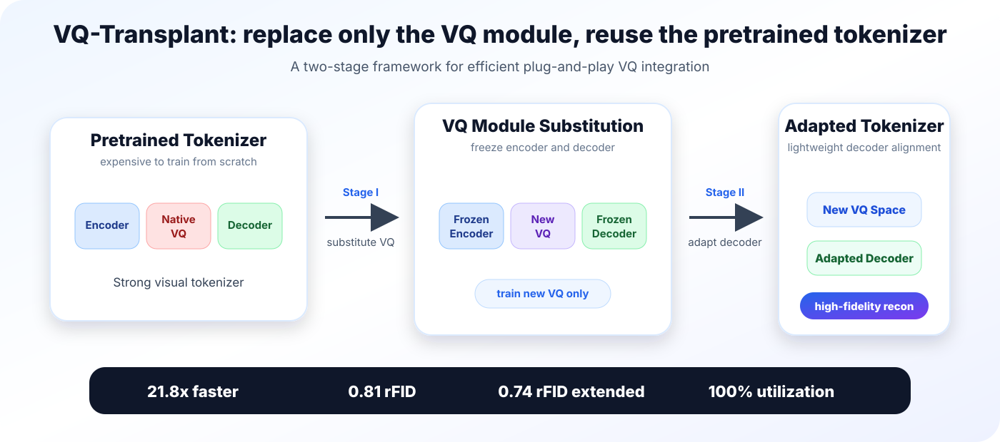
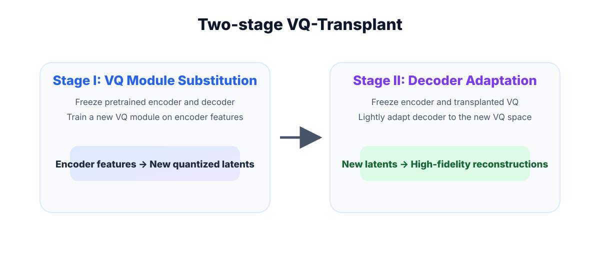
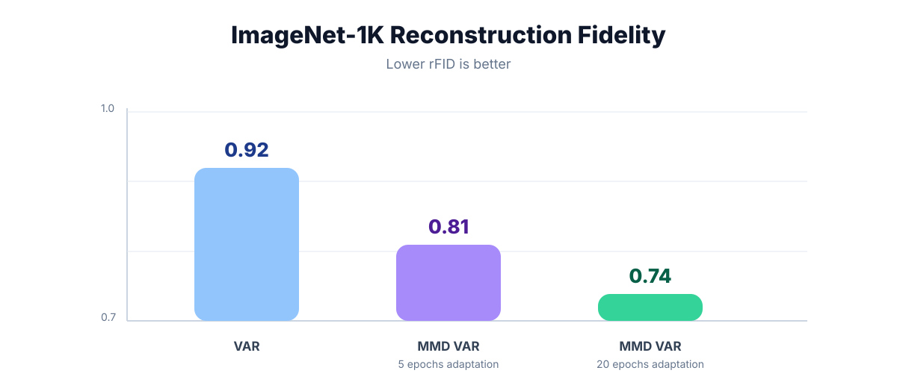
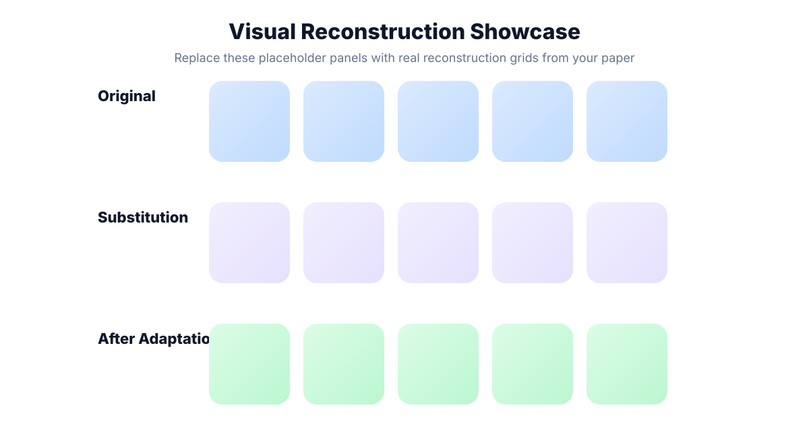

21.8×
faster training than standard VAR
Plug-and-play replacement of vector quantization modules in pretrained visual tokenizers without costly end-to-end retraining.
University of Toronto · Boston College · Vijil

faster training than standard VAR
rFID with MMD-VAR on ImageNet-1K
rFID with extended decoder adaptation
codebook utilization for MMD-VAR
Vector Quantization underpins modern discrete visual tokenization. However, training new quantization modules for state-of-the-art VQ-based tokenizers often requires substantial computational resources. VQ-Transplant addresses this limitation by enabling plug-and-play integration of new VQ modules into frozen, pretrained visual tokenizers.
The framework preserves pretrained encoder-decoder parameters, replaces the native VQ module, and applies lightweight decoder adaptation to resolve decoder-quantization mismatch. This makes it possible to explore new VQ methods efficiently while retaining strong reconstruction fidelity.
VQ-Transplant decouples quantization research from full tokenizer retraining.

Freeze the pretrained encoder and decoder. Replace the native VQ module with a new quantizer and train it on pretrained encoder features.
Freeze the encoder and transplanted VQ module. Lightly adapt the decoder so that its learned priors match the new quantized latent space.
Use maximum mean discrepancy to align feature and codebook distributions without relying on Gaussian assumptions.
VQ-Transplant reaches strong reconstruction fidelity with substantially lower training cost.

| Method | Tokens | Codebook size | Adaptation | rFID ↓ | Utilization ↑ |
|---|---|---|---|---|---|
| VAR tokenizer | 680 | 4096 | - | 0.92 | 100% |
| MMD-VAR | 680 | 4096 | 5 epochs | 0.91 | 100% |
| MMD-VAR | 680 | 8192 | 5 epochs | 0.81 | 100% |
| MMD-VAR | 680 | 8192 | 20 epochs | 0.74 | 100% |
Replace this placeholder with reconstruction grids from the paper, such as ImageNet before and after decoder adaptation, plus FFHQ, CelebA-HQ, and LSUN-Churches examples.

@inproceedings{fang2026vqtransplant,
title = {VQ-Transplant: Efficient VQ-Module Integration for Pre-trained Visual Tokenizers},
author = {Fang, Xianghong and Yuan, Yuan and Kong, Dehan and Rudner, Tim G. J.},
booktitle = {International Conference on Learning Representations},
year = {2026}
}